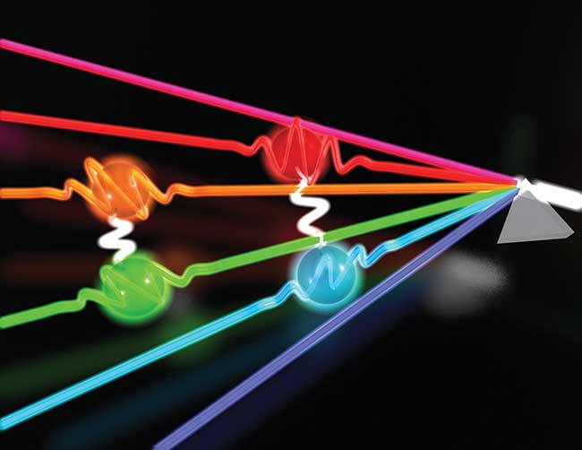
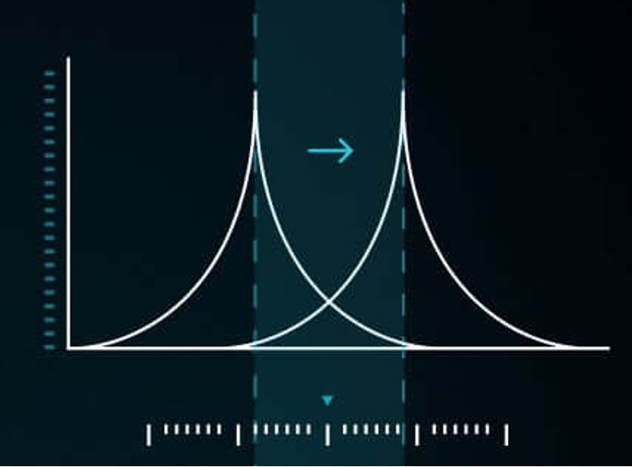

Quantum Information, Communications and Networking

Overview:
While classical information is represented by bits that can have a value of either 0 or
1, quantum
information is represented by qubits, which can exist in a superposition of 0 and 1 at
the same time.
Quantum communications and networking refers to the transmission of qubits between two
or more parties using
unique quantum phenomena like entanglement that are not available to classical networks.
The recent development of
quantum networks has quickly grown in scale and sparked a technological revolution in
novel applications including
quantum sensing and quantum computing.
This project is supported by NSF under grant OMA-2304118.
For more information, please refer to the project page here: Link.
Selected Publications:
[1] "Qubit Recycling in Entanglement Distillation", S. Pelletier, R. Yu, J. Liu, IEEE Int. Conf. on Quantum Computing and Engineering , Seattle, USA, 2023.
[2] "On Topology Design for the Quantum Internet", R. Yu, R. Dutta, J. Liu, IEEE Network , Vol. 36, no. 5, pp. 64-70, 2022.
[1] "Qubit Recycling in Entanglement Distillation", S. Pelletier, R. Yu, J. Liu, IEEE Int. Conf. on Quantum Computing and Engineering , Seattle, USA, 2023.
[2] "On Topology Design for the Quantum Internet", R. Yu, R. Dutta, J. Liu, IEEE Network , Vol. 36, no. 5, pp. 64-70, 2022.
Dynamic Spectrum Access, Cross-Technology and Cross-Application Co-Existence
Overview:
Radio frequency spectrum is a limited and valuable resource that is becoming
increasingly congested. With the proliferation of wireless devices and applications, the
demand for spectrum is outpacing the supply, leading to
spectrum scarcity in many areas. This scarcity can cause interference, congestion, and
poor quality of service for wireless users. Dynamic spectrum access (DSA) offers a
solution to this problem by
allowing for more efficient and flexible use of the spectrum. In addition to spectrum
management like DSA, distributed network control to reconcile different wireless
technologies
from different service providers is also a critical yet open research problem.
This project is supported by NSF CAREER Award under grant ECCS-2312738.
For more information, please refer to the project page here: Link.
Selected Publications:
[1] "LEONS: Multi-Domain Network Slicing Configuration and Orchestration for Satellite-Terrestrial Edge Computing Networks", H. Esmat, B. Lorenzo, J. Liu, IEEE Int. Conf. on Communications , Rome, ITA, 2023.
[2] "Optimizing IoT energy efficiency on edge (EEE): A cross-layer design in a cognitive mesh network", J. Liu, Y. Pang, H. Ding, Y. Cai, H. Zhang, Y. Fang IEEE Transactions on Wireless Communications , Vol. 20, no. 4, pp. 2472-2486, 2020.
[1] "LEONS: Multi-Domain Network Slicing Configuration and Orchestration for Satellite-Terrestrial Edge Computing Networks", H. Esmat, B. Lorenzo, J. Liu, IEEE Int. Conf. on Communications , Rome, ITA, 2023.
[2] "Optimizing IoT energy efficiency on edge (EEE): A cross-layer design in a cognitive mesh network", J. Liu, Y. Pang, H. Ding, Y. Cai, H. Zhang, Y. Fang IEEE Transactions on Wireless Communications , Vol. 20, no. 4, pp. 2472-2486, 2020.
Differential Privacy: Algorithm Development and Hardware Realization

Overview:
Differential privacy has become widely accepted as a rigorous and usable
privacy-enhancing technique in recent years as the amount of
data collected about individuals has exploded, and concerns about privacy have grown. It
is now used in a variety of applications, including healthcare, finance, and social
media, where sensitive information is often collected and analyzed. The distinctive
significance of differential privacy lies in its strong protection of an individual's
data while still allowing for valuable data analysis. However, recent studies have
revealed side-channel attacks to differential privacy mechanisms, highlighting the need
for further investigation on this research problem.
This project is supported by NSF under grant CNS-2247273.
For more information, please refer to the project page here: Link.
Selected Publications:
[1] "Two Birds with One Stone: Differential Privacy by Low-power SRAM Memory", J. Liu, N. Gong, H. Das, Network and Distributed System Security Symposium , San Diego, USA, 2023.
[2] "Epic: A differential privacy framework to defend smart homes against internet traffic analysis", J. Liu, C. Zhang, Y. Fang, IEEE Internet of Things , Vol. 5, no. 2, pp. 1206-1217, 2018.
[1] "Two Birds with One Stone: Differential Privacy by Low-power SRAM Memory", J. Liu, N. Gong, H. Das, Network and Distributed System Security Symposium , San Diego, USA, 2023.
[2] "Epic: A differential privacy framework to defend smart homes against internet traffic analysis", J. Liu, C. Zhang, Y. Fang, IEEE Internet of Things , Vol. 5, no. 2, pp. 1206-1217, 2018.
Hardware-Software Co-design for IoT Security and Communications
Overview:
IoT represents a fundamental shift in the way we interact with the physical world.
It collects vast amounts of data that can be
used to create new applications and services, improve efficiency, and provide new
insights. In general, IoT devices are designed to be lightweight in terms of power
consumption, memory, and processing capabilities, as they are often small,
battery-powered, and designed for simple tasks. In a contending communication
environment, the lightweight nature of IoT devices can often result in a lack of
intelligent maneuverability, which can lead to operational failures. My lab strives to
unlock the potential of IoT devices by improving their hardware and software
functionality collectively.
Selected Publications:
[1] "A Secure and Efficient Protocol for LoRa Using Cryptographic Hardware Accelerators", S. Puckett, J. Liu, S. Yoo, T. Morris, IEEE Internet of Things Journal , 2023.
[2] "A Robust Algorithm for Sniffing BLE Long-Lived Connections in Real-time", S. Sarkar, J. Liu, E. Jovanov, IEEE Global Communications Conference , Waikoloa, USA, 2019.
[1] "A Secure and Efficient Protocol for LoRa Using Cryptographic Hardware Accelerators", S. Puckett, J. Liu, S. Yoo, T. Morris, IEEE Internet of Things Journal , 2023.
[2] "A Robust Algorithm for Sniffing BLE Long-Lived Connections in Real-time", S. Sarkar, J. Liu, E. Jovanov, IEEE Global Communications Conference , Waikoloa, USA, 2019.